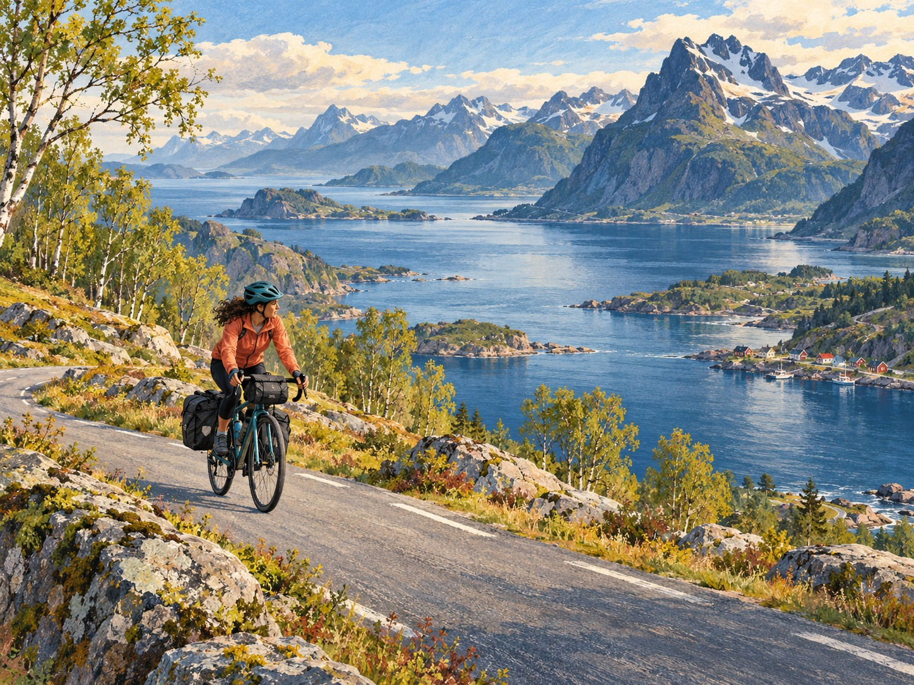
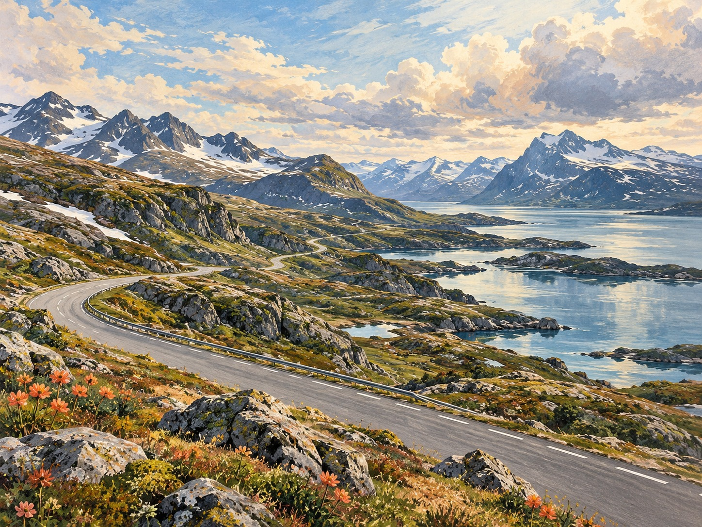
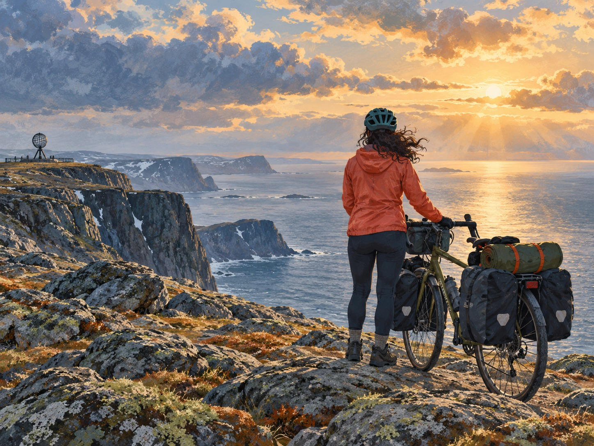
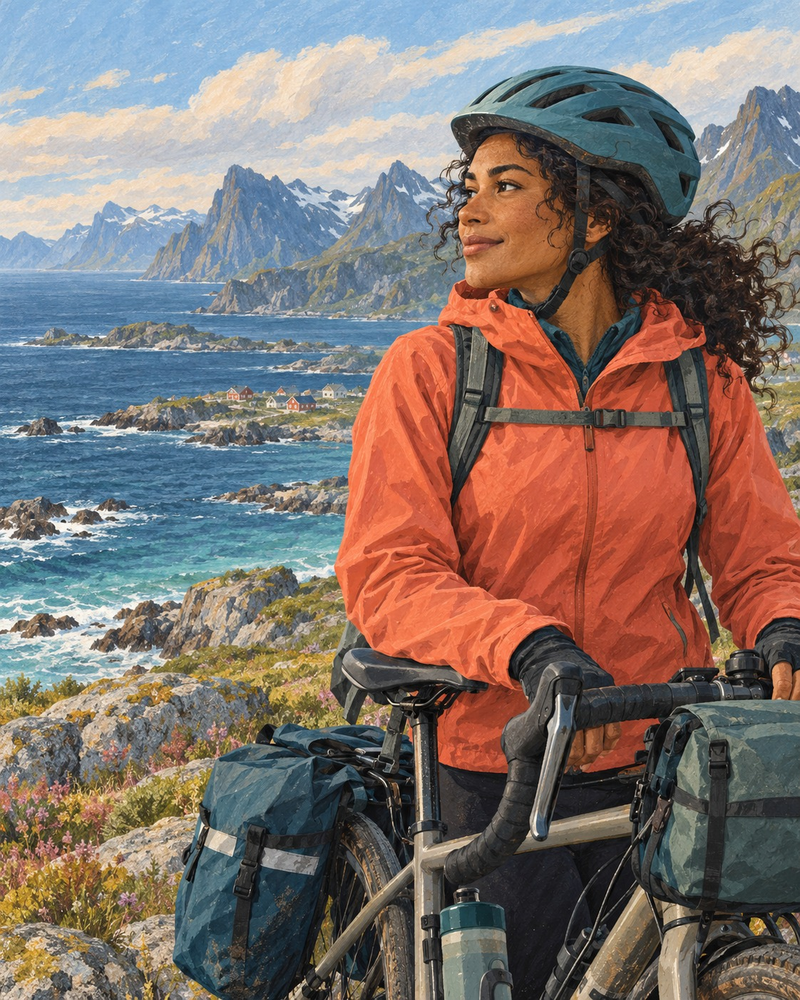

1
LER · Klasse 9 · Filmbeobachtung
ON HER OWN
Allein mit dem Fahrrad ans Nordkap




3.500 km30 TageHamburg → Nordkapallein mit dem Fahrrad
Schreibe zu jeder Frage Stichpunkte oder kurze Sätze in den freien Block.
2
Was ist auf der Reise für Wiebke besonders schön?
3
Was ist auf der Reise für Wiebke besonders schwierig?
4